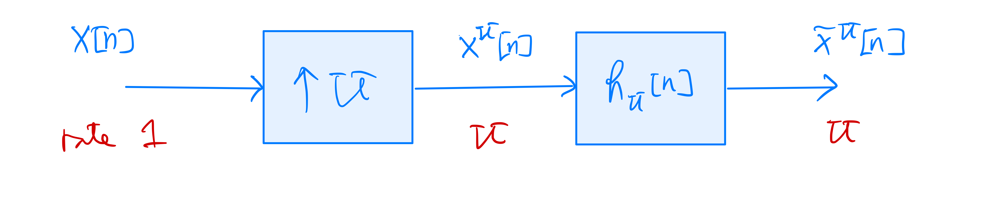
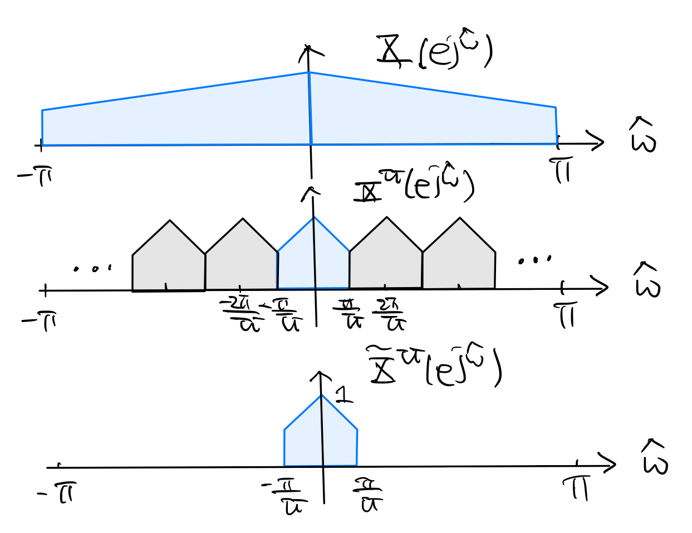

7.2. Interpolation#
Given \(x[n] \stackrel{z}{\longleftrightarrow} X(z)\). Consider the upsampled signal \(x^U[n] = \begin{cases} x[ \frac{n}{U}] & \text{if } n \text{ is divisible by } U \\ 0 & \text{otherwise} \end{cases}\) where \(U\) is a positive integer. That is, \(x^U[n]\) is obtained from \(x[n]\) by inserting \(U-1\) zero-valued samples between each pair of adjacent samples in \(x[n]\). The rate of \(x^U[n]\) is \(U\) times that of \(x[n]\), i.e., every sample of \(x[n]\) produces \(U\) samples of \(x^U[n]\).
The \(z\)-transform of \(x^U[n]\) is
\[\begin{align*} X^U(z) &= \sum_{n=-\infty}^{\infty} x^U[n] z^{-n} \\ &= \sum_{m=-\infty}^{\infty} x[m] z^{-mU} \\ &= X(z^U). \end{align*}\]Tip
If \(x[n]\) is causal and the ROC of \(X(z)\) is \(\{|z| > r\}\), then the ROC of \(X_D(z)\) is \(X(z)\) is \(\{|z| > r^{\frac{1}{U}}\}\).
Suppose the ROC of \(X(z)\) contains the unit circle. Then the ROC of \(X^U(z)\) also does, and hence the DTFT of the upsampled signal \(x^U[n]\) is given by
(7.2)#\[\begin{equation} X^U(e^{j\hat\omega}) = X(e^{j\hat\omega U}) \end{equation}\]Passing the upsampled signal \(x^U[n]\) through an ideal lowpass filter with frequency response \(\displaystyle H_U(e^{j\hat\omega}) = \begin{cases} U & \text{for } |\hat\omega| < \frac{\pi}{U} \\ 0 & \text{for } \frac{\pi}{U} \leq |\hat\omega| \leq \pi \end{cases}\) and impulse response \(h_U[n] = \frac{\sin (\frac{\pi}{U} n)}{\frac{\pi}{U} n}\)
gives the interpolated signal \(\tilde{x}^U[n]\) whose DTFT \(\tilde{X}(e^{j\hat\omega}) = X^U(e^{j\hat\omega}) H_U(e^{j\hat\omega})\):
In the time domain,
(7.3)#\[\begin{split}\begin{align*} \tilde{x}^U[n] &= x^U[n] * h_U[n] \\ &= \sum_{k=-\infty}^{\infty} x[k] \, \frac{\sin \left(\frac{\pi}{U} (n-kU) \right)}{\frac{\pi}{U} (n-kU)}. \end{align*}\end{split}\]If \(x[n]\) is originally obtained from oversampling a continuous-time signal \(x(t)\) at sampling rate \(f_s\), the sampling theorem (3.9) tells us that
\[\begin{equation*} x(t) = \sum_{k=-\infty}^{\infty} x[k] \, \frac{\sin \left( \pi f_s (t-\frac{k}{f_s}) \right)}{\pi f_s (t-\frac{k}{f_s})}. \end{equation*}\]Thus, sampling \(x(t)\) at sampling rate \(Uf_s\) gives
\[\begin{align*} x \left(\frac{n}{Uf_s} \right) &= \sum_{k=-\infty}^{\infty} x[k] \, \frac{\sin \left(\frac{\pi}{U} (n-kU) \right)}{\frac{\pi}{U} (n-kU)} \\ &= \tilde{x}^U[n]. \end{align*}\]That is, the interpolated signal \(\tilde{x}^U[n]\) is exactly the sampled version of \(x(t)\) obtained at sampling rate \(Uf_s\).
Starting from \(x[n]\) and downsampling it by a factor \(D\) to get \(x_D[n]\). If we interpolate \(x_D[n]\) by the factor \(D\), then the frequency-domain steps of interpolation depicted in the figure above are exactly the reverse of the downsampling steps that give \(x_D[n]\) from \(x[n]\) in the case of oversampling. Hence, we will obtain \(x[n]\) back by interpolating the downsampled signal \(x_D[n]\) with the same factor \(D\). In terms of (7.3), that is to say
(7.4)#\[\begin{equation} x[n] = \tilde{x}^D_D[n] = \sum_{k=-\infty}^{\infty} x_D[k] \, \frac{\sin \left(\frac{\pi}{D} (n-kD) \right)}{\frac{\pi}{D} (n-kD)} \end{equation}\]as long as \(X(e^{j\hat\omega}) = 0\) for \(\frac{\pi}{D} \leq |\hat\omega| \leq \pi\). Equation (7.4) is the discrete-time version of the sampling theorem for downsampling the bandlimited \(x[n]\) by the factor \(D\).
{kind=link}
{kind=link}